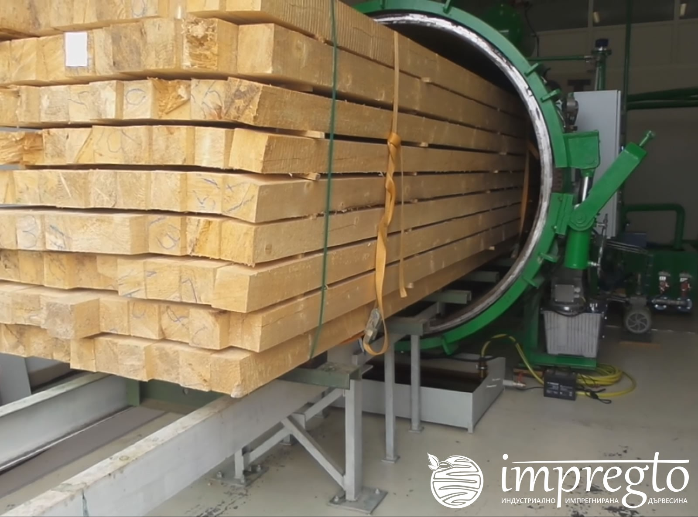

Сушенето на дървесината се извършва с цел намаляване на влагата в нея. Този процес може да протече по естествен или изкуствен начин. Дървесината може да бъде изсушена от атмосферата, естествено чрез въздуха, а може и да се изсуши регулирано, в специални камери за сушене – това е най-разпространеният метод за сушене на дървени талпи които след това се използват за производството на мебели. Третият метод за изсушаване на дървесината е химично сушене. Тоест, използват се водоразтворими вещества и соли, чрез специална методика, за да се изведе водата към периферията на дървото. Технологията е такава, че химичното сушене на дървесината се използва като преподготовка на дървесината за сушене.

Обработката на дървесината с химични вещества се нарича импрегниране. Това се прави с цел да се унищожат всички вредители, за да се удължи срока й за съхраняване, както и за използване. Не на последно място, импрегнирането дава нови качества на дървесината.Обикновено се използват фунгициди и инсектициди, такива които са за борба с микроорганизми, гъби и насекоми. ЕМСИЕН-3 ООД предлага такъв вид импрегниране на дървените материали.Дървесината може да се импрегнира без налягане. Това означава повърхност пръскане и намазване с антисептици. Такава обработка се прави и чрез накисване във воден разтвор на цинков двухлорид. Редуването при обработката в гореща и в студена вана с антисептик също спада към този метод, както и обработка с висока честота на ток.Когато дървесината се обработва чрез налягане, то това се случва по два начина – пълно налягане или ограничено. Този метод позволява да се контролира дълбочината на проникване на антисептика и неговото количество. Методът може да се прилага и на изсушена дървесина, и на сурова дървесина.